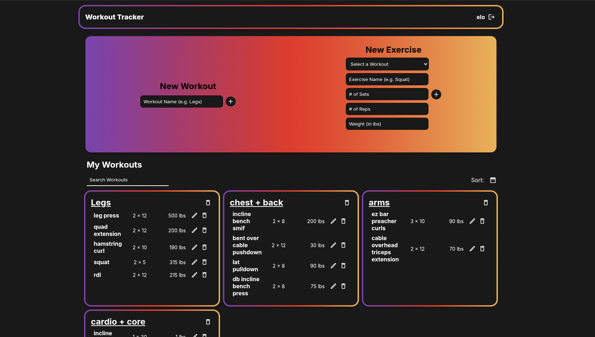

MUSIC TRACKER APP
The main purpose of this project is to aid in tracking and rating albums you have listened to. However, there are plenty of other functions that naturally coincide with this main objective. For example, an account system, creating lists for each account, adding new albums and artists into the database, and many more functions were needed the basic functionality of the project.
LANGUAGES / TOOLS USED:
- ReactJS
- JavaScript
- MySQL
- Node.js
- Express.js
WORKOUT TRACKER APP

I am currently working on building another tracking app. This one is for tracking one's progress in the gym, which is done by tracking how many sets, reps, and how much weight was done for each specific workout. This application is meant to be simple, because it is meant to be used while in the gym, where the user would benefit from less distractions.
LANGUAGES / TOOLS USED:
- TailwindCSS
- TBD